Code
# Load the library "rstanarm" to fit Bayesian linear models using the function
# stan_glm()
library(rstanarm)Load R-libraries
# Load the library "rstanarm" to fit Bayesian linear models using the function
# stan_glm()
library(rstanarm)Readings.
Read Wilkinson et al. !
Hypothesis tests. It is hard to imagine a situation in which a dichotomous accept-reject decision is better than reporting an actual p value or, better still, a confidence interval. Never use the unfortunate expression “accept the null hypothesis.” Always provide some effect size estimate when reporting a p value.
Effect sizes. Always present effect sizes for primary outcomes. If the units of measurement are meaningful on a practical level (e.g., number of cigarettes smoked per day), then we usually prefer an unstandardized measure (regression coefficient or mean difference) to a standardized measure (r or d). It helps to add brief comments that place these effect sizes in a practical and theoretical context.
Interval estimates. Interval estimates should be given for any effect sizes involving principal outcomes. Provide intervals for correlations and other coefficients of association or variation whenever possible.
Wilkinson (1999), p. 599.
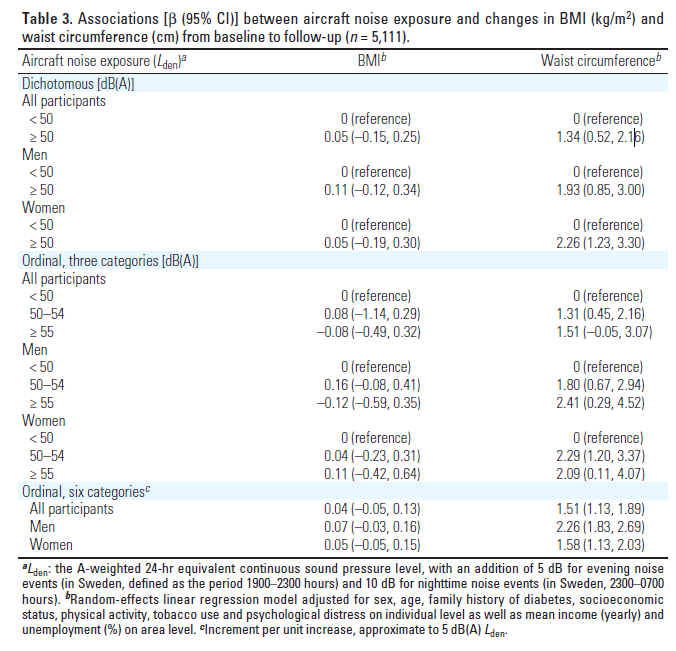
From the inspirational article for Data set 3. The table show regression coefficients (point estimates) with 95 % confidence intervals.
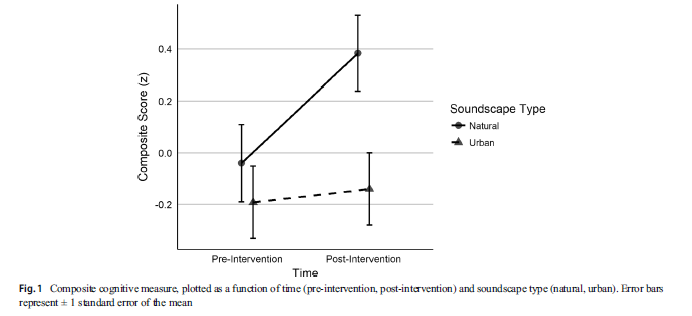
This is the inspirational article for Data set 1. The figure show mean z-scores (point estimates) with standard errors of the mean (i.e., 68 % confidence intervals).
Unknown and typically unobservable parameter value to be estimated:
Point Estimate
Interval
Point estimates should be accompanied by interval estimates. Three general types of intervals are
The good news: For the same data, confidence intervals, credible intervals, and likelihood intervals tend to be quite similar, especially when derived from large datasets.
Compatibility interval: a generic term that recently has become popular:
” .. we can think of the confidence interval as a “compatibility interval” …, showing effect sizes most compatible with the data according to their P-values, under the model used to compute the interval. Likewise, we can think of a … Bayesian “credible interval,” as a compatibility interval showing effect sizes most compatible with the data, under the model and prior distribution used to compute the interval … ” (from Amrhein et al., 2019)
Gelman et al. (2021) discusses the term on pp. 110-111 (Gelman seem to prefer the term “uncertainty interval”, but I prefer “compatibility interval” as it makes no claims about our state of certainty; “compatibility” only refer to the relation between, on the one hand, possible parameter values, and, on the other, our data and statistical model).
Gelman et al. (2021), p. 59, defines:
This classification of errors seem more relevant than the old Type I and Type II error classification which was based on null hypothesis significance testing and its dichotomization of results as either statistically significant or non-significant.
“We do not generally use null hypotheses significance testing in our work. In the field in which we work, we do not generally think null hypotheses can be true: in social science and public health, just about every treatment one might consider will have some effect, and no comparison or regression coefficient of interest will be exactly zero. We do not find it particular helpful to formulate and test null hypotheses that we know ahead of time cannot be true. Testing null hypothesis is just a matter of data collection: with sufficient sample size, any hypothesis can be rejected and there is no real point in gathering a mountain of data just to reject a hypothesis that we did not believe in the first place.”
Gelman et al. (2021), p. 59.
It is important to distinguish between intervals that refer to the variability in our data (e.g., \(\pm 1 SD\)) and to intervals that refer to our parameter estimates (i.e. \(\pm 1 SE\)). I will call the former Variability intervals (a new term that I just invented) and the latter compatibility intervals for reasons discussed above.
Simple simulation of variability of scores and compatibility of mean scores in a small and a large study, sampled from the same population of test takers:
errbar_plot <- function(y){
# Plot point estimate +/- 1 SD
plot(NA, xlim = c(0, 3), ylim = c(-2, 4), axes = FALSE, xlab = '', ylab = '')
arrows(x0 = 1, x1 = 1, y0 = mean(y) - sd(y), y1 = mean(y) + sd(y),
length = 0.01, angle = 90, code = 3)
points(1, mean(y), pch = 21, bg = 'grey')
text(x = 0.8, y = -2.0, "+/- 1 SD", pos = 4)
# Add point estimate with 95 % CI
ci <- confint(lm(y ~ 1))
arrows(x0 = 2, x1 = 2, y0 = ci[1], y1 = ci[2],
length = 0.01, angle = 90, code = 3)
points(2, mean(y), pch = 21, bg = 'grey')
text(x = 1.8, y = -2.0, "95 % CI", pos = 4)
# Add y-axis
axis(2, las = 2, pos = 0.5, tck = 0.01)
mtext(text = "outcome variable", side = 2, line = -2.5, cex = 1)
# Add text sample size
stext <- paste("Sample size =", as.character(length(y)))
mtext(text = stext, side = 3, cex = 1)
}set.seed(123)
# Small sample study
n <- 20
y <- rnorm(n, mean = 1, sd = 2) # Difference score in pre-post experiment
errbar_plot(y)# Large sample study
n <- 800
y <- rnorm(n, mean = 1, sd = 2) # Difference score in pre-post experiment
errbar_plot(y)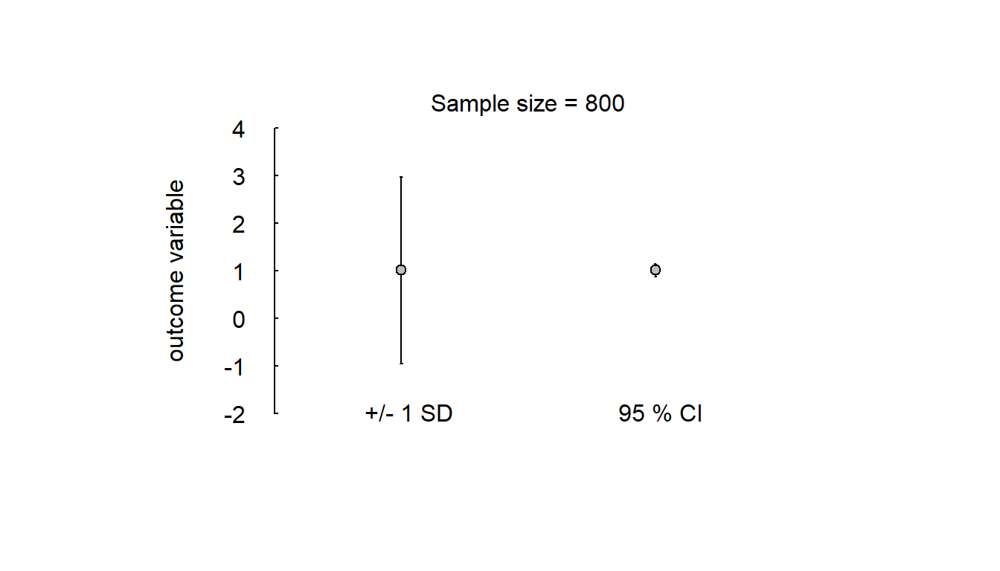
Resist dichotomous thinking!
“… whether [compatibility] intervals include or exclude zero should play no role in their interpretation, because even with only random variation the intervals from different studies can easily be very different” (Amrhein et al., 2019)
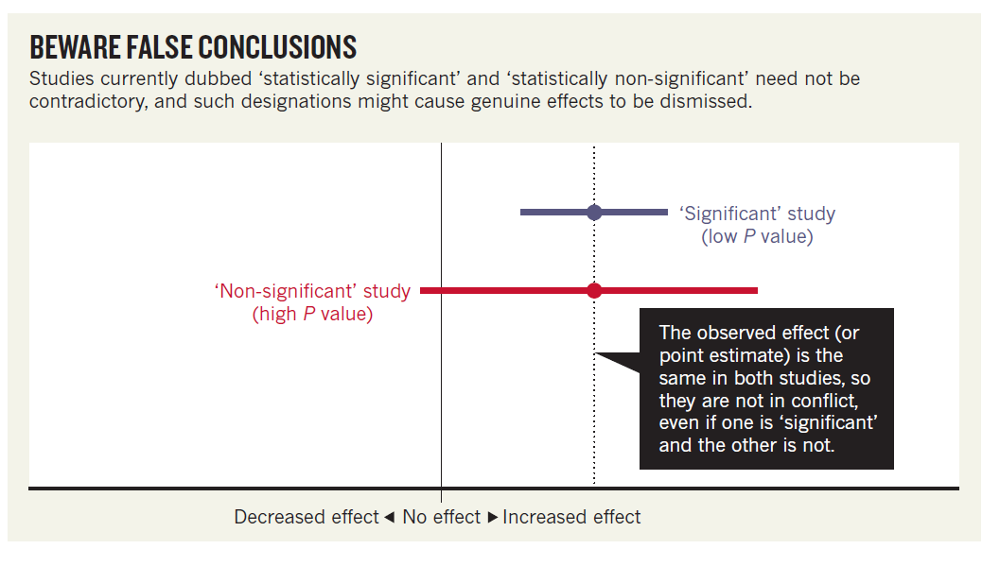
Example in Amrhein et al. (2019): Result from study on unintended effects of anti-inflammatory drugs: Risk-ratio (RR) of 1.2 [-0.03, 0.48]. This non-significant result (p = 0.091) led the authors to conclude that exposure to the drugs was not associated with the outcome (atrial fibrillation), in contrast to results from an earlier study (RR = 1.2) with a statistically significant outcome.
Compare this to Amrhein et al’s interpretation of the result:
“Like a previous study, our results suggest a 20% increase in risk of new-onset atrial fibrillation in patients given the anti-inflammatory drugs. Nonetheless, a risk difference ranging from a 3% decrease, a small negative association, to a 48% increase, a substantial positive association, is also reasonably compatible with our data, given our assumptions.” (Amrhein et al., 2019)
This is a good example of how to interpret point estimates and intervals!
A sampling distribution is the distribution of a sample statistic, for example the mean, that would be observed if we could repeat the sampling procedure infinitely many times, and for each time calculate the statistic. The standard error of the statistic is the standard deviation of its sampling distribution.
Here simulation of random draws of samples from a normal distribution with mean = 100 and sd = 15. The figure shows the distribution of sample means for three sample sizes.
# Create a function that does what you want to simulate one time
my_sample <- function(n = 25) {
x <- rnorm(n, mean = 100, sd = 15)
out <- mean(x)
out
}
# Repeat my_sample() many times with the replicate() function
n25 <- replicate(n = 1e4, my_sample(n = 25)) # Replicate 100,000 times
n100 <- replicate(n = 1e4, my_sample(n = 100))
n900 <- replicate(n = 1e4, my_sample(n = 900))
# Plots
par(mfrow = c(1, 3))
hist(n25, breaks = 200, xlim = c(85, 115), main = "n = 25")
hist(n100, breaks = 200, xlim = c(85, 115), main = "n = 100")
hist(n900, breaks = 200, xlim = c(85, 115), main = "n = 900")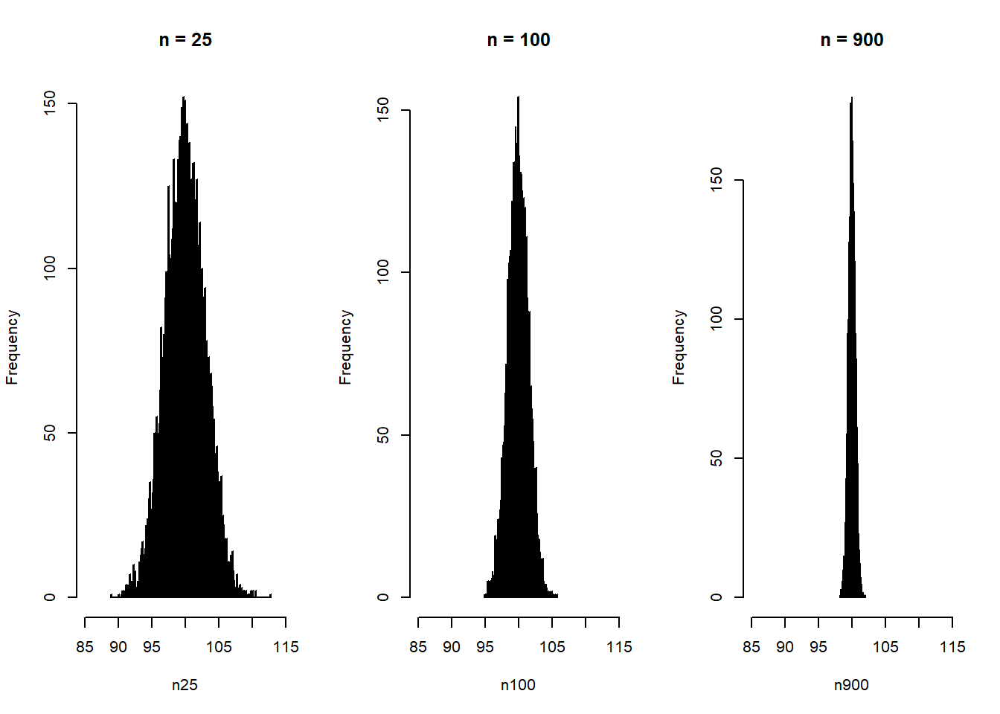
The standard deviation of the sampling distribution of means is the standard error of the mean: \(\sigma/\sqrt{n}\), where \(\sigma\) is the standard deviation in the population add \(n\) is the sample size.
The simulations were based on 10,000 random samples, so the standard deviation from the simulations would be a good approximation of the standard deviation (i.e., standard error) of the true sampling distribution (based on infinitely many random draws).
# Standard errors (sd of sampling distributions)
se <- c(se_n25_approx = sd(n25), se_n100_approx = sd(n100), se_n900_approx = sd(n900))
round(se, 3) se_n25_approx se_n100_approx se_n900_approx
2.951 1.495 0.499 se_exact <- 15 / sqrt(c(25, 100, 900)) # SE = SD/sqrt(n)
names(se_exact) <- c("se_n25", "se_n1005", "se_n900")
round(se_exact, 3) se_n25 se_n1005 se_n900
3.0 1.5 0.5 Typically, we don’t know \(\sigma\), and therefore use the sample standard deviation to estimate the (true) standard error. In most cases when people, including myself, use the term “standard error” (SE) they refer to an estimate of the true standard error. The estimate of the standard error of the mean, \(SE_{\bar{X}}\), is
\(SE_{\bar{X}} = \frac{SD(X)}{\sqrt{n}}\),
where \(X\) is a sample of observations \(x_1, x_2, ..., x_n\), \({\bar{X}}\) is the sample mean, and \(SD(X)\) is the sample standard deviation.
note: The term “standard error” may also be used with a more general meaning:
“… in our current practice we usually summarize uncertainty using simulation, and we give the term”standard error” a looser meaning to cover any measure of uncertainty that is compatible to the posterior standard deviation”, Gelman et al. (2021), p. 51 on the variability of the posterior distribution estimated using Bayesian statistics. Gelman et al. advocate the median absolute deviation (MAD) as measure of standard error (in the lose meaning of the word) as this measure of dispersion is more robust to extreme values.
Here a simulation of a sampling distribution: Samples of 25 observations drawn independently from a normal distribution with \(\mu = 100\) and \(\sigma = 15\). The standard deviation of the distribution of sample means, \(\sigma_{\bar x}\) is called the standard error:
\(\sigma_{\bar x} = \frac{\sigma_x}{\sqrt{n}}\)
So for this simulation with \(\sigma = 15\) and \(n = 15\), the estimated standard error from our simulation should be close to its true value:
\(\sigma_{\bar x} = \frac{15}{\sqrt{25}} = 3\).
# Create a function that for one simulation
my_sample <- function(n = 25) {
x <- rnorm(n, mean = 100, sd = 15)
out <- mean(x)
out
}
# Repeate my_sample() many times with the replicate() function
my_simul <- replicate(n = 1e5, my_sample()) # Replicate 100,000 times
# Illustrate results and calculate some stats
hist(my_simul, breaks = 200, main = "Sample means, n = 25")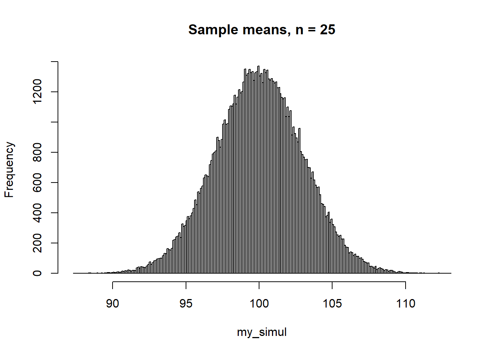
my_stats <- c(mean = mean(my_simul), se = sd(my_simul),
median = median(my_simul), mad = mad(my_simul))
round(my_stats, 1) mean se median mad
100 3 100 3 And here is what happens if you sample from a non-normal distribution, in this example a uniform distribution between 50 and 150:
\(X \sim Unif(a = 50, b = 150)\),
for which \(E(X) = 100\), \(SD(X) = 100/\sqrt{12} \approx 28.9\). With \(n = 25\), the standard error would be \(28.9/5 \approx 5.8\).
# As above, but with a uniform distribution between 50 and 150
my_sample <- function(n = 25) {
x <- runif(n, min = 50, max = 150)
out <- mean(x)
out
}
# Plot uniform distribution
plot(20:180, dunif(20:180, min = 50, max = 150), type = 'l', ylim = c(0, 0.015),
xlab = "x", ylab = "probability density")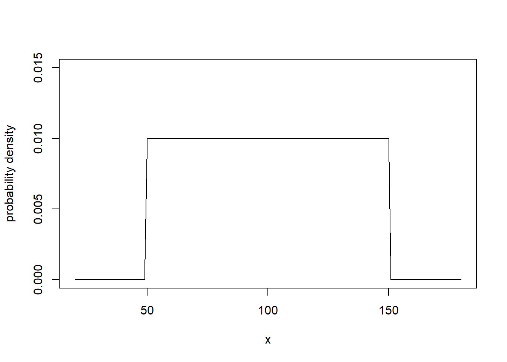
# Repeat my_sample() many times with the replicate() function
my_simul <- replicate(n = 1e5, my_sample()) # Replicate 100,000 times
# Illustrate results and calculate some stats
hist(my_simul, breaks = 200, main = "Sample means, n = 25")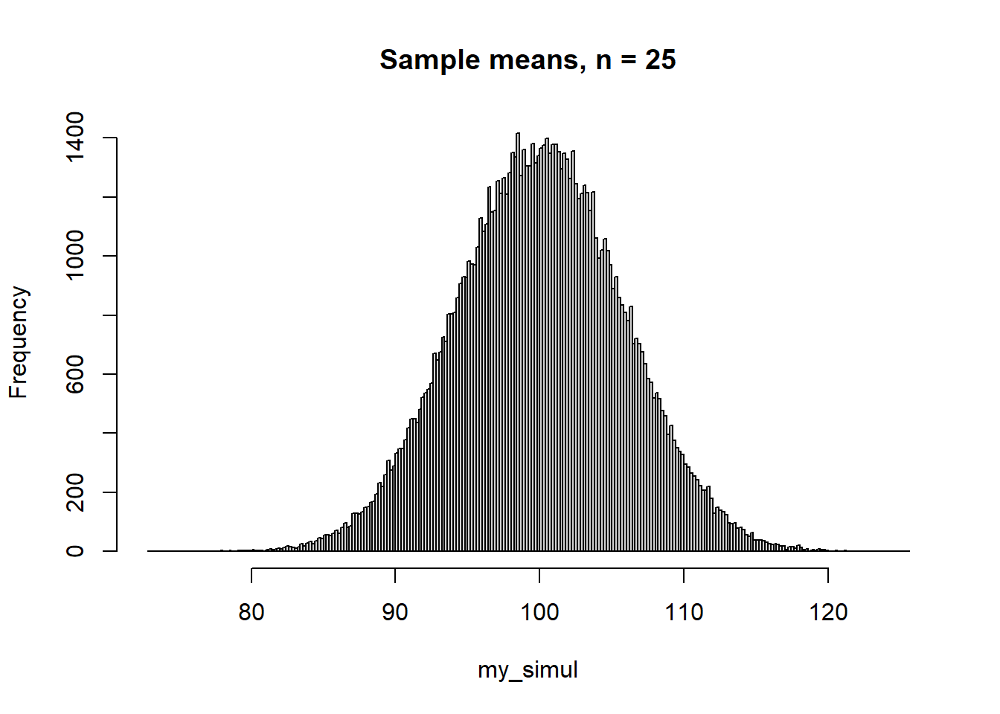
my_stats <- c(mean = mean(my_simul), se = sd(my_simul),
median = median(my_simul), mad = mad(my_simul))
round(my_stats, 1) mean se median mad
100.0 5.8 100.0 5.8 The conventional confidence intervals around the mean are calculated using the T-distribution, with n-1 degrees of freedom, df (Gelman et al. (2021), p. 53). The T-distribution with few df has heavier tails than the normal distribution, but already at moderate sample sizes, say df = 49, the two distributions are very similar. This is the standard analytic method for calculating the confidence interval:
\(CI = \bar{X} \pm t_{\alpha/2}SE_{\bar{X}}\),
where \(t_{\alpha/2}\) is the critical t-value for a specified \(\alpha\) level. For example, if \(\alpha = .05\), then the critical t-value define the two cut-off points between which the middle 95 % of the probability is located. This is roughly -2 and 2 SEs from the mean, and that is why \(\pm 2SE\) often is a good approximation of a 95 % confidence interval. For example, the cutoffs would be \(-1.96SE\) and \(1.96SE\) for the normal distribution, and \(-2.01SE\) and \(2.01SE\) for a sample size of n = 50 (df = 49).
Example: Sample mean = 101, sd = 21, sample size = 50.
\(95\%CI = mean(x) \pm t_{.05/2}SE_x =\)
\(=101 \pm 2.01*\frac{21}{\sqrt{50}} =\)
= [95, 107].
Here is how you may use lm() in R to obtain the interval.
set.seed(879)
# Simulate sample with mean = 101, sd = 21, and n = 50
m = 101 # sample mean
s = 21 # sample sd
n = 50 # sample size
x <- rnorm(n) # 50 observations
z <- (x - mean(x))/sd(x) # transform to z-scores: mean = 0, sd = 1
y <- (z*s) + m # transform the z-scores to get mean = 101, sd = 21
# Use lm() to derive 95 % confidence interval, i.e., do
# linear regression without predictor, only the intercept = mean is estimated.
mfit <- lm(y ~ 1)
confint(mfit) 2.5 % 97.5 %
(Intercept) 95.03187 106.9681Note: Please try t.test(y), it is the same thing!
Another common method for estimating the confidence intervals is to do bootstrapping. This is a very powerful and general method that may be used to derive confidence intervals when no analytic solution exists or when assumptions behind analytic solutions seem hard to accept. See Gelman et al. (2021) chapter 5, on how bootstrapping is used to simulate a sampling distribution. Here is code to do it for the data simulated in the previous section.
bootstrap <- function(y) {
# Random draw from the sample with replacement, same n
b <- sample(y, size = length(y), replace = TRUE)
meanb <- mean(b)
meanb
}
# Draw 10,000 bootstraps
bb <- replicate(1e4, bootstrap(y))
hist(bb, breaks = seq(84.5, 115.5, by = 1), main = "10k bootstraps",
xlab = "Mean of bootstrapped sample")
bootstrap_summary <- c(mean = mean(bb),
quantile(bb, probs = c(0.025, 0.975)))
lines(bootstrap_summary[c(2, 3)], c(40, 40), col = "blue")
points(bootstrap_summary[1], 40, pch = 21, bg = "blue")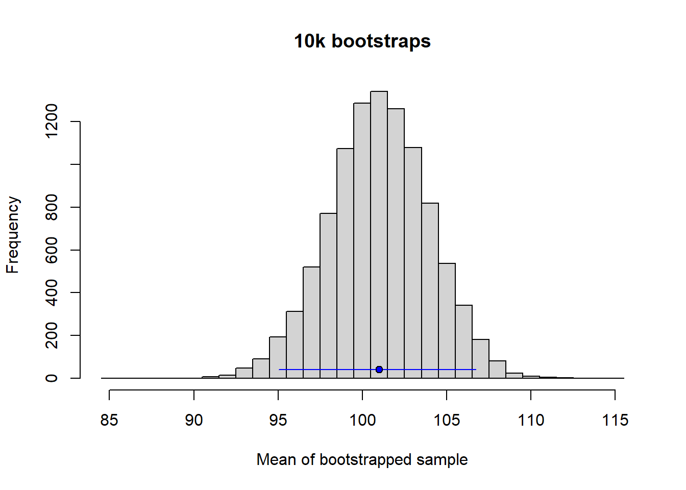
round(bootstrap_summary, 1) mean 2.5% 97.5%
101.0 95.0 106.7 The likelihood is the probability of the observed data considered as a function of unknown model parameter(s) \(\theta\)
Example: Likelihood function of the success probability \(\theta\) (theta) in a binomial experiment (“coin tosses”) with \(s = 6\) successes in \(n = 9\) trials. To make it more realistic, you may think of a sample of 9 students from a specific student population, 6 of which answered correctly on a given exam question. Your goal is to use this data to estimate the proportion of correct answers had the full population been tested.
# Function that derives the likelihood function using brute force
binom_likelihood <- function(n, s) {
# Grid approximation
theta <- seq(from = 0, to = 1, by = 1/300) # Grid of parameters
likelihood <- dbinom(x = s, size = n, prob = theta) # Likelihood
ylab = 'likelihood'
# Plot likelihood function
plot(theta, likelihood, type = 'l', axes = FALSE, ylab = ylab)
axis(1, pos = 0)
axis(2, pos = 0, las = 2)
}
# Data
n <- 9
s <- 6
# Plot likelihood
binom_likelihood(n = n, s = s)
mtext(text = "Data fixed: 6 successes in 9 trials", side = 3, cex = 0.8)
lines(x = c(6/9,6/9), y = c(0, dbinom(x = 6, size = 9, prob = 6/9)),
lty = 2, col = "blue")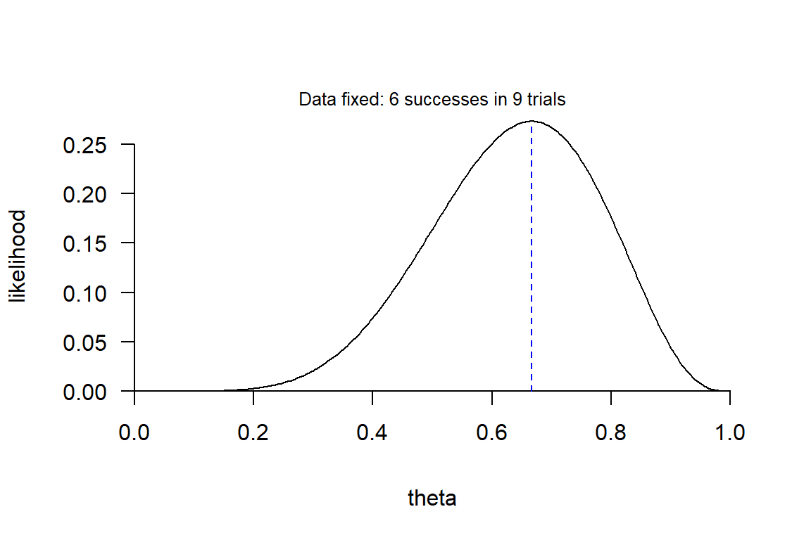
The blue line show the maximum of the likelihood function (maximum likelihood) found at \(\theta = 6/9\). So, the data is most compatible with a true proportion of 6/9. But also highly compatible with proportions around 6/9.
Likelihood function and sampling distribution are different things, yet based on the same probability distribution. But the likelihood function treats data as fixed and parameters as variable, whereas sampling distributions treats the parameter as fixed and the data as variable. Here sampling distributions for \(\theta\) of 1/10, 1/2, 9/10
# Probabilities for all possible outcomes, s = 0, 1, ..., n
n = 9
par(mfrow = c(1, 3))
# Function for ploting sampling distributions figures
sdist <- function(prob) {
p <- dbinom(0:n, size = n, prob = prob)
plot(0:n, p, type = 'h', xlab = 'data', ylab = 'P(data|theta)')
}
sdist(prob = 1/10)
mtext(text = "Parameter fixed, theta = 1/10", side = 3, cex = 0.7)
sdist(prob = 1/2)
mtext(text = "Parameter fixed, theta = 1/2", side = 3, cex = 0.7)
sdist(prob = 9/10)
mtext(text = "Parameter fixed, theta = 9/10", side = 3, cex = 0.7)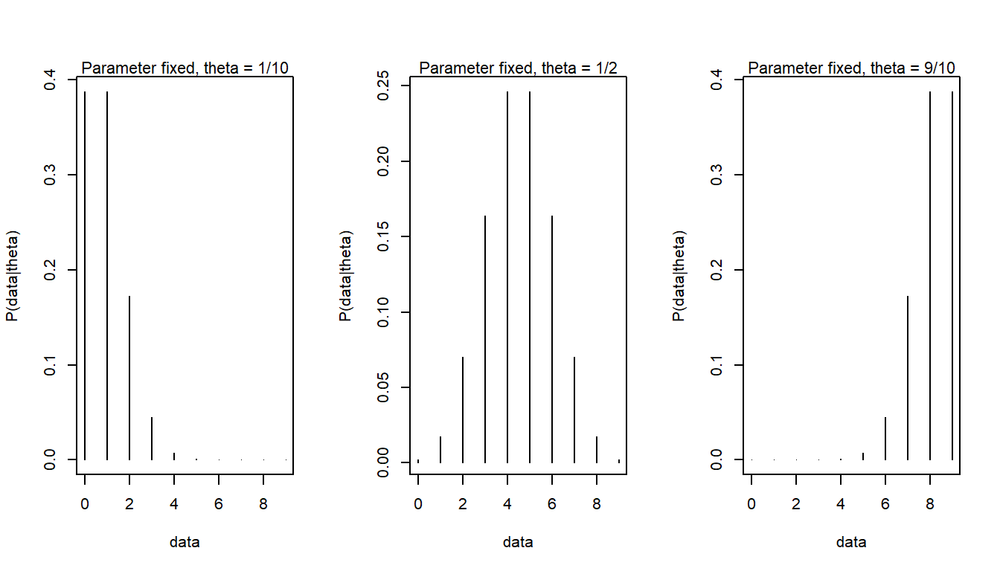
In the above example, there was only one parameter, \(\theta\), representing the proportion of correct answers to an exam question had the full population of students been tested. Assume instead that we have a sample of exam scores from 16 students, and we want to estimate the mean and standard deviation had we tested the full population of students. We may treat exam scores as a continuous variable and assume that it is normally distribution,
\(scores \sim N(\mu, \sigma)\). Here are our 16 exam scores.
set.seed(123)
score <- rnorm(16, 50, 10) # Simulate exam scores from 16 students
round(score) [1] 44 48 66 51 51 67 55 37 43 46 62 54 54 51 44 68round(c(mean = mean(score), sd = sd(score)), 2) mean sd
52.55 9.13 The likelihood function is 2-dimensional, because we have to parameters, \(\mu\) and \(\sigma\). (Code only for nerds.)
# Use grid approximation to obtain likelihood function
# Define grid
mu <- seq(from = 20, to = 80, length.out = 500)
sigma <- seq(from = 2, to = 18, length.out = 500)
grid <- expand.grid(mu = mu, sigma = sigma)
# Calculate likelihood (some tricks needed here using log = TRUE)
grid$loglike <- sapply(1:nrow(grid), function(i) sum(dnorm(
score,
mean = grid$mu[i],
sd = grid$sigma[i],
log = TRUE)))
# Normalize to max = 1, and antilog
grid$likelihood <- exp((grid$loglike) - max(grid$loglike))
# Plot likelihood function, using contour_xyz from library rethinking
rethinking::contour_xyz(grid$mu, grid$sigma, grid$likelihood,
xlim = c(45, 60), ylim = c(5, 15), xlab = 'mu', ylab = 'sigma')
mtext(text = "Data fixed: n = 16, mean = 52.5, sd = 9.1", side = 3, cex = 0.9)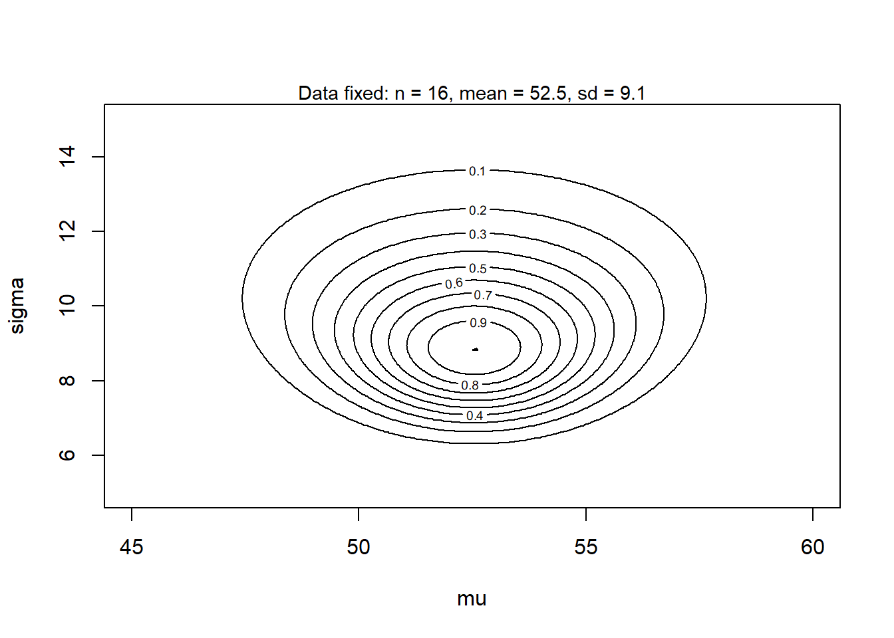
This contour plot shows the two-dimensional likelihood function. The maximum likelihood estimate is the mode (highest point) of this function.
Whereas the previously discussed methods for deriving confidence intervals rely heavily on sampling distributions, Bayesian methods (covered below) use the likelihood function to estimate the corresponding interval, often referred to as a credible interval.
This code shows how to derive a credible interval in R using rstanarm, using the same simulated data as above, i.e., sample mean = 101, sd = 21, and n = 50.
# Use library(rstanarm) and function stan_glm() to derive 95 % credible interval.
# Variable y was created in the previous code block.
y <- data.frame(y) # stan_glm wants data in a data frame
sfit <- stan_glm(y ~ 1, data = y, seed = 123, refresh = 0)
print(sfit)stan_glm
family: gaussian [identity]
formula: y ~ 1
observations: 50
predictors: 1
------
Median MAD_SD
(Intercept) 101.0 3.0
Auxiliary parameter(s):
Median MAD_SD
sigma 21.2 2.1
------
* For help interpreting the printed output see ?print.stanreg
* For info on the priors used see ?prior_summary.stanregEstimated mean = 101 with a standard error (in the lose meaning of the term) of 3.0. So a rough 95 % interval would be \(101 \pm 2*3\), i.e. \([95, 107]\). We can also ask stan_glm for the 95 % interval of the posterior distribution:
posterior_interval(sfit, prob = 0.95) 2.5% 97.5%
(Intercept) 94.90063 107.33378
sigma 17.54435 26.4538195 % interval around the mean: \([94.9, 107.3]\)
Note that stan_glm also provide a confidence interval for the standard deviation (sigma): \([17.5, 26.5]\), point estimate = \(21.2\). Note also that this interval is not symmetrical around the point estimate, because the posterior distribution of sigma is not symmetrical. This is an example of where the simple rule \(\pm 2 SE\), may be misleading.
Posterior distribution sigma estimated using stan_glm()
# Extract samples from the posterior
samples <- as.data.frame(sfit)
sigma <- samples$sigma
# Plot density curve for sigma
plot(density(sigma), xlab = "Sigma",
main = "Posterior probability: sigma, with 95 and 50 % CI")
# Derive point estimate and compatibility interval
point_estimate <- median(sigma)
ci95 <- quantile(sigma, prob = c(0.025, 0.975))
ci50 <- quantile(sigma, prob = c(0.25, 0.75))
# Plot point estimate and compatibility interval
arrows(x0 = ci95[1], x1 = ci95[2], y0 = 0.01, y1 = 0.01,
length = 0, col = "blue")
arrows(x0 = ci50[1], x1 = ci50[2], y0 = 0.01, y1 = 0.01,
length = 0, col = "darkblue", lwd = 3)
points(point_estimate, 0.01, pch = 21, bg = 'lightblue') # Add point"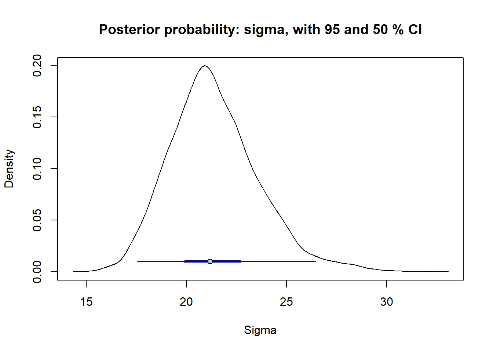
Here I also added a 50 % CI (thick line) to the 95 % interval (thin line), to emphasize that the values closer to the point estimate are more compatible with the data than those close to the end of the 95 % interval (as always: given our statistical model). See Gelman et al. (2021) Fig. 19.4, p.367 for example of how they use combined 50 and 95 % interval.
The general goal of Bayesian inference is to update prior beliefs (hypotheses) in light of data to arrive at posterior beliefs (updated hypotheses). The key idea is to think about uncertainty as probabilities and use probability theory to be consistent in the way beliefs in hypotheses are updated.
Remember the twin problem:
A women is pregnant with twins, and her doctor tells her that about one third of twin births are identical and the remaining two thirds are fraternal. On the next visit to the doctor, the sonogram shows that she is pregnant with twin boys. Her doctor tells her that about half identical twins are twin boys and the other half are twin girls, whereas for fraternal twins about one quarter are twin boys, one quarter are twin girls, and the rest are one of each sex. How should she update her belief in identical versus fraternal twins given this information? (old Stat1 exam question)
Here the information in frequency format (think of 600 twin births):
| BB | Mix | GG | Marginal | |
|---|---|---|---|---|
| Identical | 100 | 0 | 100 | 200 |
| Fraternal | 100 | 200 | 100 | 400 |
| Marginal | 200 | 200 | 200 | 600 |
Solve using Bayes rule:
Solve with relative version of Bayes rule:
So we can see that the posterior probability is equal for the two alternatives, although we know that the absolute posterior probability is not 1/6.
Here is a graphical illustration of the result:
# Plot posterior, prior, likelihood
par(mfrow = c(1, 3))
prior <- c(2/3, 1/3)
likelihood <- c(1/4, 1/2)
relposterior <- c(1/6, 1/6)
# Make plot
mybar <- function(x, main, ylab) {
plot(NULL, xlim = c(-0.3, 1.3), ylim = c(0, 1), axes = FALSE,
xlab = "Parameter", ylab = ylab, main = main)
points(c(0, 1), x, type = "h", lwd = 2)
axis(1, at = c(-0.3, 0, 1, 1.2), labels = c("", "Fraternal", "Identical", ""),
cex.axis = 0.8, pos = 0)
axis(2, las = 2, pos = -0.3)
}
# Draw plot
mybar(relposterior, main = "Relative posterior", ylab = "Relative posterior probaility")
mybar(prior, main = "Prior", ylab = "Prior probaility")
mybar(likelihood, main = "Likelihood", ylab = "Likelihood")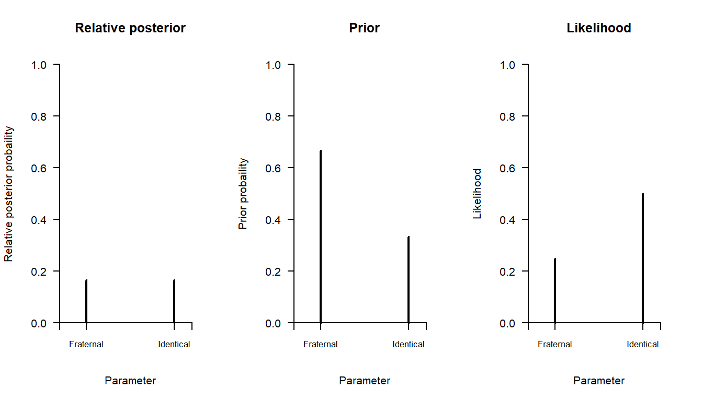
Note: The shape of the posterior is all we need, the absolute heights of the bars in the left-hand panel is not used for inference, only their relative height. In this case, the two bars have the same height, meaning that the two outcomes have the same posterior probability.
In this example, it was fairly easy to derive the absolute posterior because we could calculate \(Pr(D)\). But for most problems, \(Pr(D)\) is very hard or impossible to calculate, and that is why Bayesian inference typically only uses the relative version of Bayes’ rule.
In the above example, we updated our beliefs in two discrete outcomes. More often we want to update our belief in a continuous parameter. For example, the probability of success in a binomial experiment with a known number of trials.
Here is a simple example: A logical problem that can be scored as either correct or incorrect. We have given the test to nine individuals, six of which answered correctly. We want to use this data to estimate the proportion of individuals who would answer correctly in the population from which the individuals were drawn. We will model the problem using the Binomial distribution, with parameters n = 9 (known), and p (unknown, to be estimated): \(y \sim Binom(n = 9, p)\)
Bayes rule: posterior \(\propto\) prior \(\times\) likelihood
We will first work with a “flat” prior, essentially saying that before we saw the data we would consider every possible value of \(p\) as equally likely.
# Data (fixed)
n <- 9
s <- 6
# Function to draw three plots
bayes_plot <- function(pgrid, prior) {
# Likelihood
likelihood <- dbinom(x = s, size = n, prob = pgrid)
# Relative posterior
relative_posterior <- prior * likelihood
# Plot posterior, prior, likelihood
par(mfrow = c(1, 3))
plot(pgrid, relative_posterior, type = 'l',
xlab = "Parameter, p", ylab = "Relative posterior probability",
main = "Reltive posterior")
plot(pgrid, prior, type = 'l', xlab = "Parameter value, p", ylab = "Prior probability density",
main = "Prior", xlim = c(-0.01, 1.01))
plot(pgrid, likelihood, type = 'l', xlab = "Parameter value, p", ylab = "Likelihood",
main = "Likelihood")
}
pgrid <- seq(from = 0, to = 1, by = 0.01) # Parameters grid
flat <- rep(1, length(pgrid))# Prior (flat)
bayes_plot(pgrid = pgrid, prior = flat)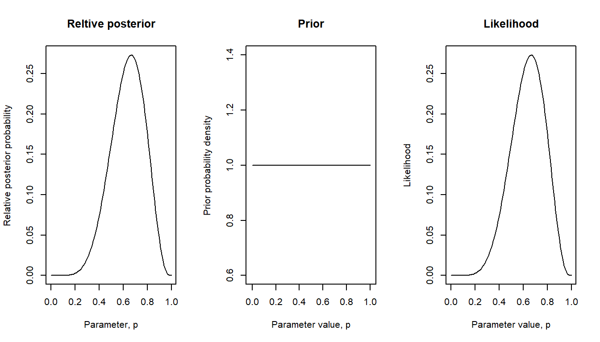
Here with a weakly informed prior: true proportion probably around 0.5, but values less or greater than this are also plausible, but we know that the true proportion is not zero and not one (maybe because we know of at least one individual in the population who can solve the problem, and at least one who could not).
# Data (fixed)
n <- 9
s <- 6
# Prior
beta22 <- dbeta(pgrid, shape1 = 2 , shape2 = 2)
bayes_plot(pgrid = pgrid, prior = beta22) # pgrid defined above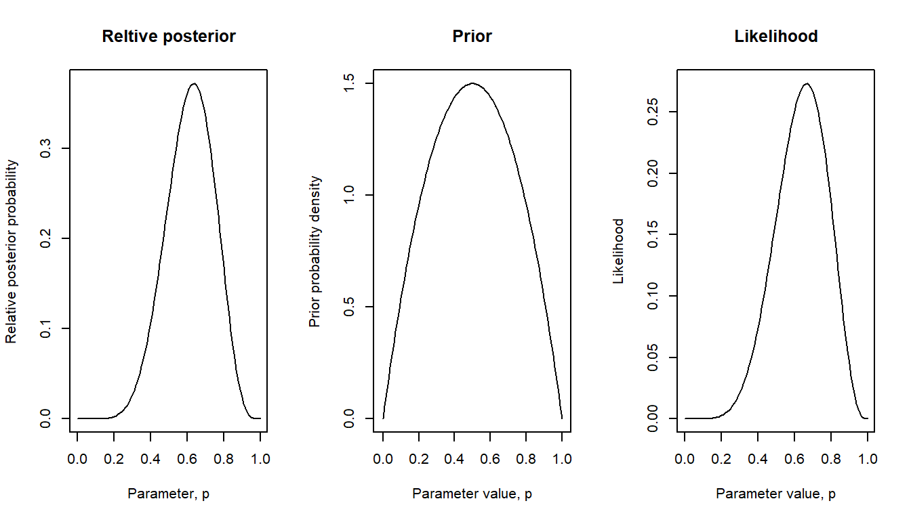
Here with a stronger prior: True proportion probably around 0.2 (maybe based on previous test results), but values less or greater than this are also plausible.
# Data (fixed)
n <- 9
s <- 6
# Prior
beta28 <- dbeta(pgrid, shape1 = 2 , shape2 = 8)
bayes_plot(pgrid = pgrid, prior = beta28) # pgrid defined above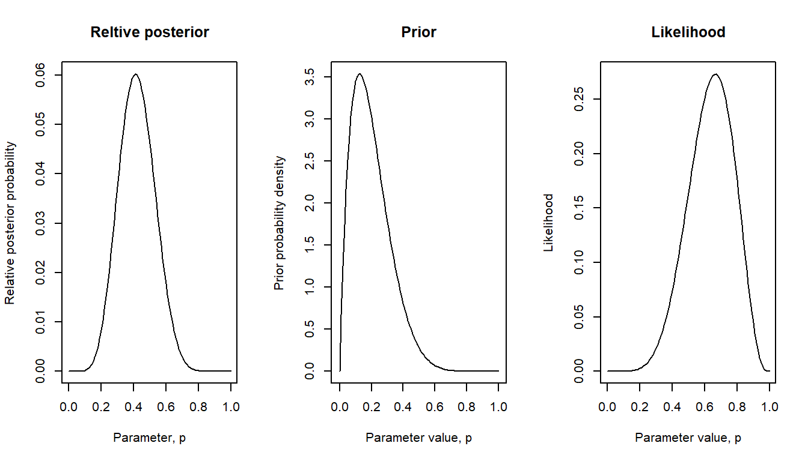
Here another informed prior: Maybe the test was a multiple-choice question with two alternatives, so proportion correct could not be worse than 50 % correct (assuming that everyone did their best), but we consider every value of \(p\) between 0.5 and 1 as equally likely.
# Data (fixed)
n <- 9
s <- 6
# Prior
lim50 <- ifelse(pgrid < 0.5, 0, 2) # pgrid defined above
bayes_plot(pgrid = pgrid, prior = lim50)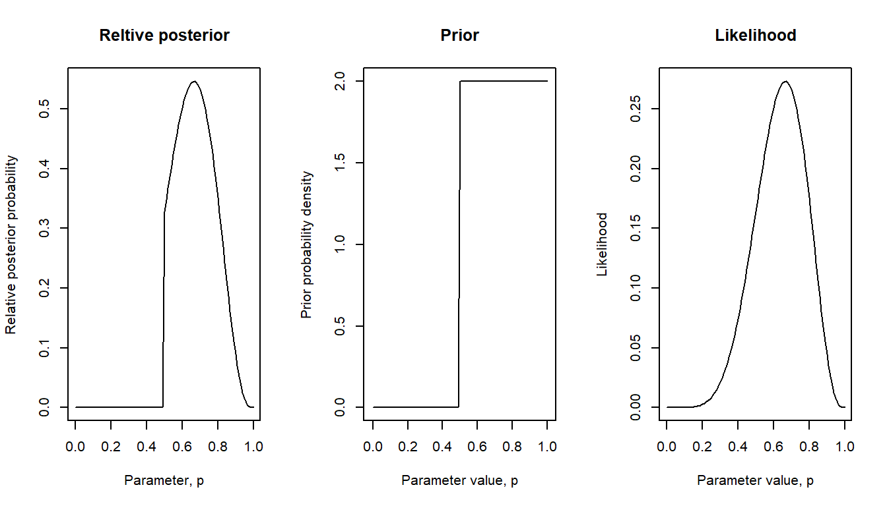
The relative posterior distribution may be hard or impossible to estimate analytically. However, it may be estimated using clever algorithms that draws a large number of random samples from the posterior and then uses these samples to estimate properties of the relative posterior, such as its median, median absolute deviation, and 95 % compatibility interval. stan_glm() uses an algorithm called Hamiltonian Monte Carlo. The code below show how to extract samples and use them to derive statistics of the posterior. The example uses the same simulated data as above, 16 test scores modeled as independent random draws from a normal distribution with unknown mean and standard deviation.
Test scores, n = 16.
set.seed(123)
score <- rnorm(16, 50, 10) # Simulate exam scores from 16 students
round(score) [1] 44 48 66 51 51 67 55 37 43 46 62 54 54 51 44 68round(c(mean = mean(score), sd = sd(score)), 2) mean sd
52.55 9.13 Fit model:
\(y_i \sim Normal(\mu, \sigma)\)
\(y_i = b_0\)
using stan_glm(), and print output:
dd <- data.frame(score) # stan_glm() likes data in a data frame
mfit <- stan_glm(score ~ 1, data = dd, refresh = 0, seed = 123, iter = 1e4)Found more than one class "stanfit" in cache; using the first, from namespace 'rstan'Also defined by 'rethinking'Found more than one class "stanfit" in cache; using the first, from namespace 'rstan'Also defined by 'rethinking'print(mfit)stan_glm
family: gaussian [identity]
formula: score ~ 1
observations: 16
predictors: 1
------
Median MAD_SD
(Intercept) 52.5 2.3
Auxiliary parameter(s):
Median MAD_SD
sigma 9.3 1.6
------
* For help interpreting the printed output see ?print.stanreg
* For info on the priors used see ?prior_summary.stanregExtract samples, plot them, and do some stats to estimate properties of the posterior.
# Save samples in data frame
samples <- as.data.frame(mfit)
# Rename columns, so "(intercept)""is called b0 (not needed)
names(samples) <- c("b0", "sigma") # Rename columns, not needed
head(samples) # Show first rows of data frame b0 sigma
1 52.32408 10.830253
2 48.21844 8.267484
3 54.49953 13.032090
4 55.00462 13.487413
5 53.30425 14.204507
6 52.14543 13.041902# Plot samples, using transparent colors. stan_glm() point estimates: white circle
plot(samples$b0, samples$sigma, pch = 19, col = rgb(0, 0, 1, 0.1),
xlim = c(45, 60), ylim = c(5, 15))
points(median(samples$b0), median(samples$sigma), pch = 21, bg = "white", cex = 1)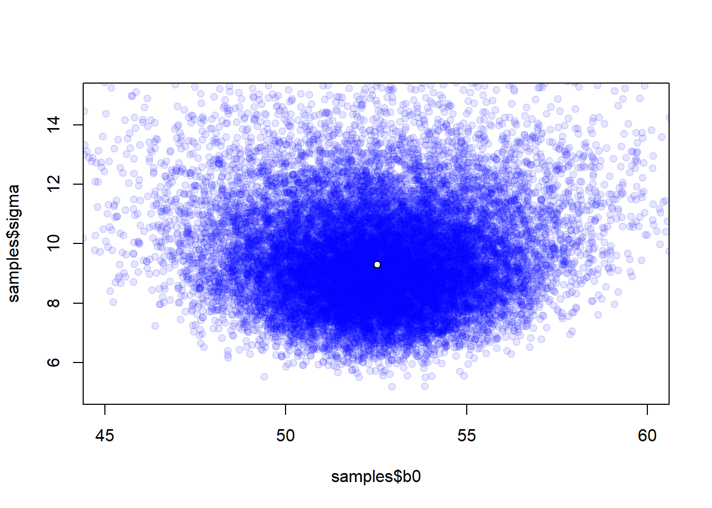
par(mfrow = c(1, 2))
# plot distribution for b0
plot(density(samples$b0), main = "Estimated posterior b0", xlab = "b0",
ylab = "Posterior probability")
# plot distribution for sigma
plot(density(samples$sigma), main = "Estimated posterior sigma", xlab = "sigma",
ylab = "Posterior probability")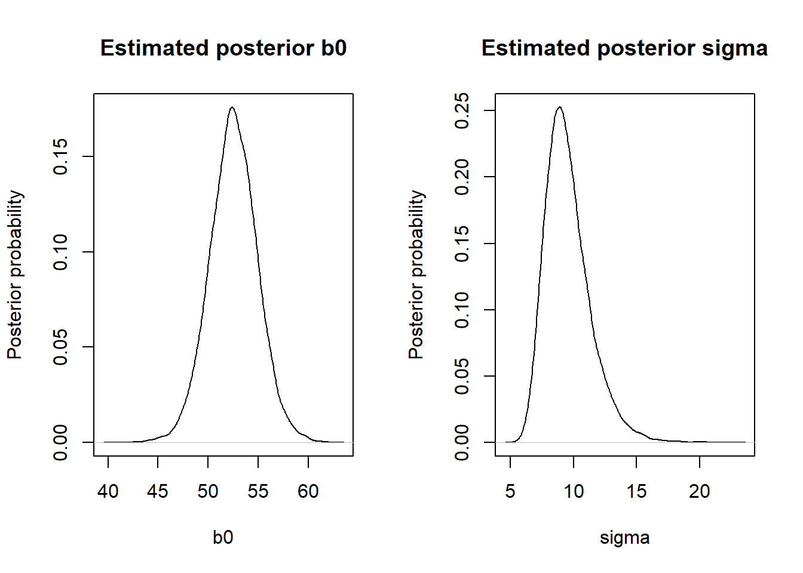
Calculate median and median absolute deviation (mad) for b0 and sigma, compare to stan_glm() output, and derive 95 % compatibility intervals for the parameters. Note: “(Intercept)” is parameter b0.
# Median and MAD
mdn_b0 <- median(samples$b0)
mad_b0 <- mad(samples$b0)
mdn_sigma <- median(samples$sigma)
mad_sigma <- mad(samples$sigma)
stats <- c(mdn_b0 = mdn_b0, mad_b0 = mad_b0,
mdn_sigma = mdn_sigma, mad_sigma = mad_sigma)
round(stats, 1) mdn_b0 mad_b0 mdn_sigma mad_sigma
52.5 2.3 9.3 1.6 # Compare with stan_glm() output
print(mfit)stan_glm
family: gaussian [identity]
formula: score ~ 1
observations: 16
predictors: 1
------
Median MAD_SD
(Intercept) 52.5 2.3
Auxiliary parameter(s):
Median MAD_SD
sigma 9.3 1.6
------
* For help interpreting the printed output see ?print.stanreg
* For info on the priors used see ?prior_summary.stanreg# Compatibility intervals, 95 %
b0_ci <- quantile(samples$b0, prob = c(0.025, 0.975))
sigma_ci <- quantile(samples$sigma, prob = c(0.025, 0.975))
round(c(b0_ci = b0_ci, sigma_ci = sigma_ci), 1) b0_ci.2.5% b0_ci.97.5% sigma_ci.2.5% sigma_ci.97.5%
47.7 57.3 6.8 13.8 The practice problems are labeled Easy (E), Medium (M), and Hard (H), (as in McElreath (2020)).
6E1.
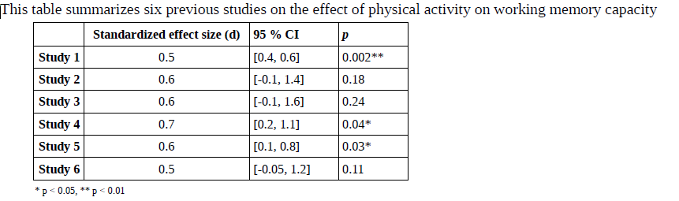
Given the information in this table, would you say that previous research is in agreement or disagreement with regard to the effect of physical activity on working memory capacity? Motivate your answer.
(This is an old exam question)
6E2. Meta-analysis is widely consider the best method for accumulation of scientific knowledge. If a meta-analysis was conducted on the studies in 6E1, what use would it have of the p-values in the fourth column of the table above?
6E3. I simulated data from a randomized experiment with a control group and a treatment group (n = 30 per group). The conditions were nature sound (treatment) versus no sound exposure (control) during a test of directed attention. The test has been used in previous research and is known to have a mean around 50 with a standard deviation around 10; a difference greater than 5 units on this scale is generally considered a substantial difference, whereas a difference of less than 1 unit is generally considered negligible. The between-group difference was 5 units in favor of the treatment group with 95 % confidence interval of [-1, 12].
In a single sentence, summarize the result for the treatment effect, with reference to the point estimate and the compatibility interval. Phrase your sentence in line with the recommendations of Amrhein et al. (2019) , and with reference to the general understanding of the outcome measure described above.
6E4. The estimated treatment effect in 6E3 was not considered statistically significant (p > .05). However, it would be a mistake to conclude from this that the data supported no effect of treatment. Explain.
6E5. Which of the following tends to decrease as sample size increases: standard deviation, standard error, median absolute deviation, 95% confidence interval, interquartile range?
6M1. The code below simulates data from a randomized experiment with one control group and one experimental group. Run the code to obtain the data, then:
R.code:
set.seed(987)
control <- rnorm(30, mean = 20, sd = 2)
treatment <- rnorm(30, mean = 22, sd = 2)
6M2. In your own words: What is the difference between a sampling distribution and a likelihood function?
6M3. Below is the binomial probability distribution for number of successes in 7 trials, \(X \sim Binom(n = 7, p = 0.3)\). Does this remind you about a sampling distribution or a likelihood function. Motivate.
plot(0:7, dbinom(0:7, size = 7, prob = 0.3), type = "h", xlab = "x = Number of successes",
ylab = "Pr(X = x)")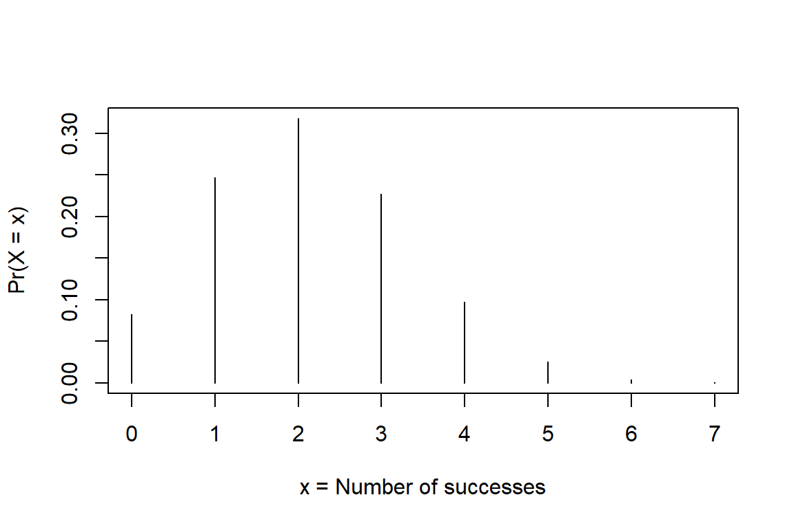
6M4. Look at the figure in 6M3, and estimate by eye:
6H1. Run the simulation and stan_glm() analysis from above, section “Advanced: Sampling from the posterior”, and calculate a 50 % and 90 % compatibility interval.
6H2.
(a) Search the internet to find the difference between “percentile interval” (PI) and “highest density interval” (HDI). Explain the difference in your own words. (b) Repeat 6H1, but now calculate a HDI. (The R package HDInterval may be useful.)
6H3.
sessionInfo()R version 4.4.2 (2024-10-31 ucrt)
Platform: x86_64-w64-mingw32/x64
Running under: Windows 11 x64 (build 26100)
Matrix products: default
locale:
[1] LC_COLLATE=Swedish_Sweden.utf8 LC_CTYPE=Swedish_Sweden.utf8
[3] LC_MONETARY=Swedish_Sweden.utf8 LC_NUMERIC=C
[5] LC_TIME=Swedish_Sweden.utf8
time zone: Europe/Stockholm
tzcode source: internal
attached base packages:
[1] stats graphics grDevices utils datasets methods base
other attached packages:
[1] rstanarm_2.32.1 Rcpp_1.0.14
loaded via a namespace (and not attached):
[1] tidyselect_1.2.1 dplyr_1.1.4 farver_2.1.2
[4] loo_2.8.0 fastmap_1.2.0 tensorA_0.36.2.1
[7] shinystan_2.6.0 promises_1.3.3 shinyjs_2.1.0
[10] digest_0.6.37 mime_0.13 lifecycle_1.0.4
[13] StanHeaders_2.32.10 processx_3.8.6 survival_3.7-0
[16] magrittr_2.0.3 posterior_1.6.1 compiler_4.4.2
[19] rlang_1.1.6 tools_4.4.2 igraph_2.1.4
[22] yaml_2.3.10 knitr_1.50 htmlwidgets_1.6.4
[25] pkgbuild_1.4.8 curl_6.4.0 cmdstanr_0.9.0.9000
[28] plyr_1.8.9 RColorBrewer_1.1-3 dygraphs_1.1.1.6
[31] abind_1.4-8 miniUI_0.1.2 grid_4.4.2
[34] stats4_4.4.2 xts_0.14.1 xtable_1.8-4
[37] inline_0.3.21 ggplot2_3.5.2 rethinking_2.42
[40] scales_1.4.0 gtools_3.9.5 MASS_7.3-61
[43] mvtnorm_1.3-3 cli_3.6.5 rmarkdown_2.29
[46] reformulas_0.4.1 generics_0.1.4 RcppParallel_5.1.10
[49] rstudioapi_0.17.1 reshape2_1.4.4 minqa_1.2.8
[52] rstan_2.32.7 stringr_1.5.1 shinythemes_1.2.0
[55] splines_4.4.2 bayesplot_1.13.0 parallel_4.4.2
[58] matrixStats_1.5.0 base64enc_0.1-3 vctrs_0.6.5
[61] V8_6.0.4 boot_1.3-31 Matrix_1.7-1
[64] jsonlite_2.0.0 crosstalk_1.2.1 glue_1.8.0
[67] nloptr_2.2.1 ps_1.9.1 codetools_0.2-20
[70] distributional_0.5.0 DT_0.33 shape_1.4.6.1
[73] stringi_1.8.7 gtable_0.3.6 later_1.4.2
[76] QuickJSR_1.8.0 lme4_1.1-37 tibble_3.3.0
[79] colourpicker_1.3.0 pillar_1.10.2 htmltools_0.5.8.1
[82] R6_2.6.1 Rdpack_2.6.4 evaluate_1.0.3
[85] shiny_1.11.1 lattice_0.22-6 markdown_2.0
[88] rbibutils_2.3 backports_1.5.0 threejs_0.3.4
[91] httpuv_1.6.16 rstantools_2.4.0 coda_0.19-4.1
[94] gridExtra_2.3 nlme_3.1-166 checkmate_2.3.2
[97] xfun_0.52 zoo_1.8-14 pkgconfig_2.0.3